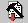

Building a Project with its Dependencies
A project may depend on several other projects, collectively referred to as its “dependencies.” This is important because the functionality compiled into the dependencies can be used by the dependent project.
To define dependencies for a given project:
- Choose Project > Settings > Link.
- In the Link tabbed dialog box now displayed, select the appropriate check boxes to designate the projects that are dependencies of the current project.
Once you have defined the dependencies for a project, you can build it, together with these dependencies, by choosing one of two additional commands available in the Build:
- Build Tree compiles only those sources in the project and its dependencies that require compilation, and then links the resulting objects and builds an executable. In the tool bar, the Build Tree icon appears as follows:

- Rebuild Tree re-compiles all of the sources in the project and its dependencies prior to performing the build operation. This command first deletes all the involved projects' objects (.o files), then recompiles all sources and builds the design.